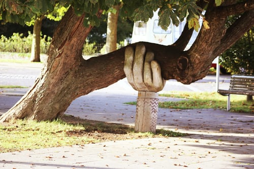

There are various ways you can support
the museum.
Donations are very welcome
and are an important way
we keep this
museum open and accessible to the Whole
community. You can also support us by
donating items
of interest to the museum’s
collections.
If you have some
item or collection that you
think others would enjoy, please
let us know
by contacting Our Collections Department
and they will be able to assist you.
